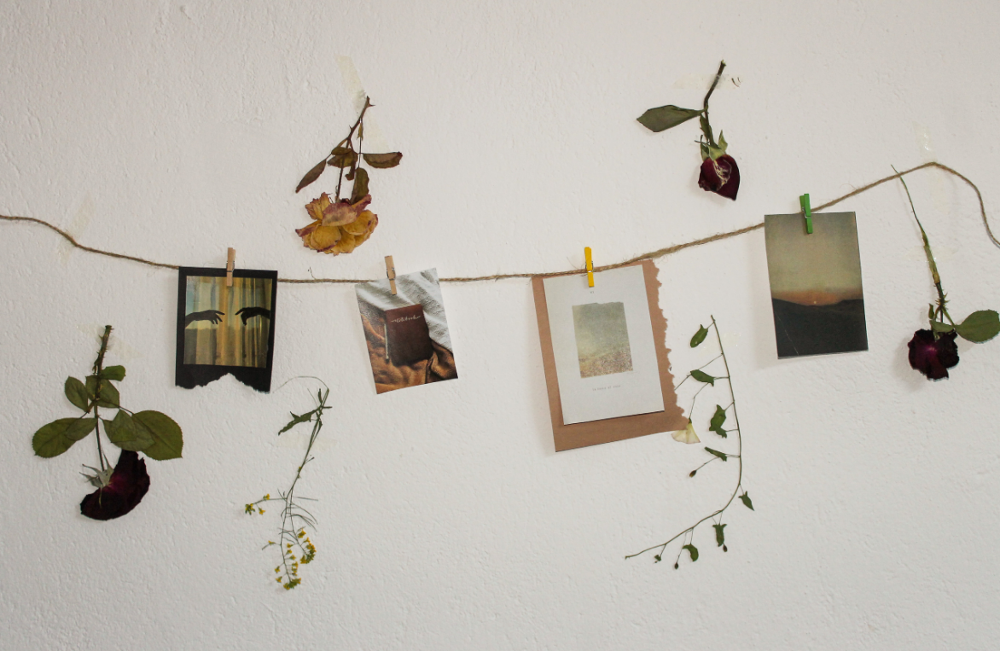

Hanging Plant Display
A thin string attached to a wall holds small photos, postcards, and dried flowers clipped with mini clothespins. It combines memories and nature for a cozy, personalized decoration.
- 🖼️ Photos clipped onto strings with dried flowers for a personalized wall.
- 🌸 Combines memories and nature in a creative, DIY style
- ✨ Lightweight, easy to hang, and visually appealing.
- 💡 Works great above desks, beds, or study corners.